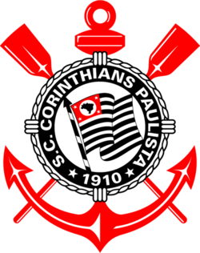
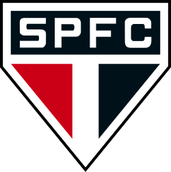
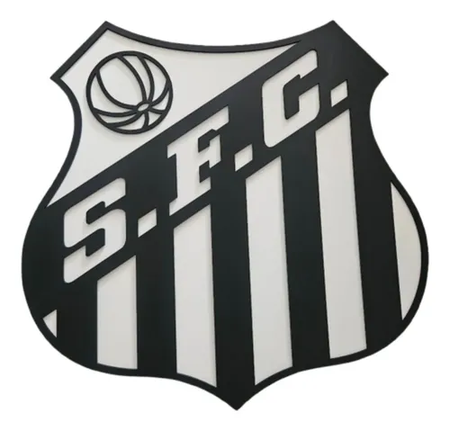

Times Paulistas:
Corinthians

1º de setembro de 1910 por um grupo de operários no bairro do Bom Retiro, em São Paulo, com o propósito de ser o "time do povo".
Títulos importantes
- Libertadores
- Mundial de Clubes
Jogadores importantes
- Jadson
- Paolo Guerrero
- Ronaldo
São Paulo

O São Paulo Futebol Clube foi fundado em 25 de janeiro de 1930, dia do aniversário da capital paulista, fruto da união entre dirigentes e atletas dissidentes do Club Athletico Paulistano e da Associação Atlética das Palmeir
Títulos importantes
- Libertadores
- Mundial de Clubes
Jogadores importantes
- Alexandre Pato
- Rogério Ceni
- Kaká
Santos

O Santos Futebol Clube foi fundado em 14 de abril de 1912 na cidade de Santos, em São Paulo.
Títulos importantes
- Libertadores
- Mundial de Clubes
Jogadores importantes
- Neymar Júnior
- Pelé
- Gabigol